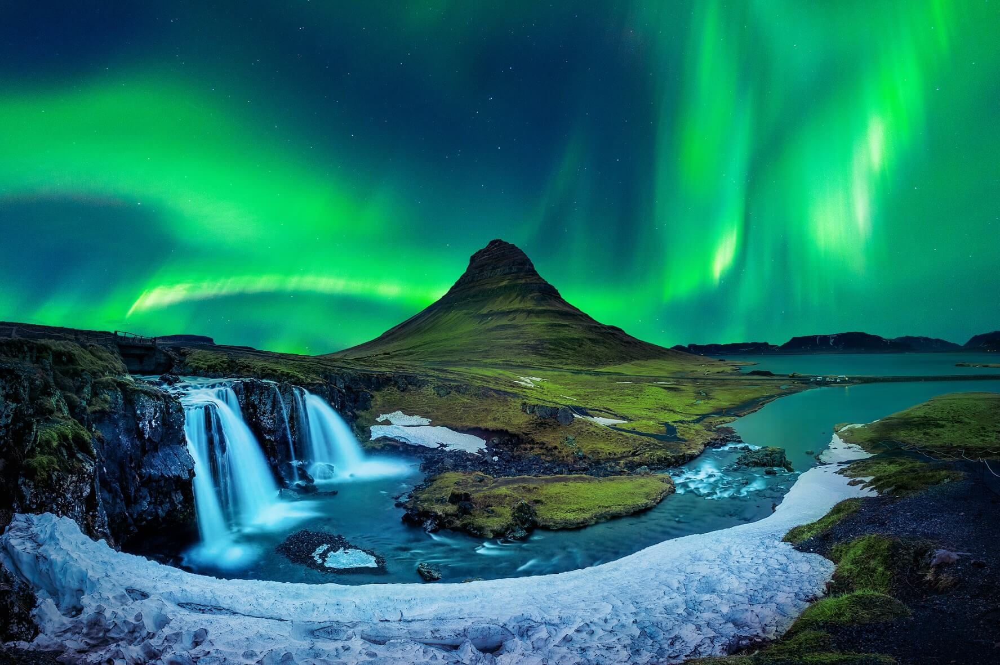

Reikiavik (Islandia)
Reikiavik, la capital de Islandia, es una ciudad vibrante rodeada de naturaleza salvaje. Su arquitectura colorida, sus cafés acogedores y sus piscinas geotermales la convierten en un destino único en el norte de Europa.
Desde la imponente iglesia Hallgrímskirkja hasta el puerto viejo y el moderno Harpa Concert Hall, la ciudad ofrece una mezcla de tradición y diseño contemporáneo. Además, es uno de los mejores lugares del mundo para contemplar auroras boreales en invierno.
A poca distancia de la ciudad, se puede disfrutar de volcanes, cascadas, glaciares y aguas termales. Reikiavik es el punto de partida perfecto para explorar el Círculo Dorado y los espectaculares paisajes de Islandia.